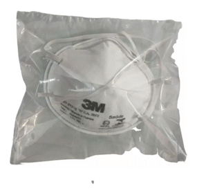

Física presente nas Máscaras N95/PFF2
Mahathma Ghibran Caetano Paes - 2021101272
Sylvio Barreto Veras - 2019200446
A física por trás do filtro eletrostático presente em máscaras PFF2/N95 consiste no uso de atração eletrostática para capturar partículas microscópicas do ar.
Os filtros dessas máscaras são fabricados com tecidos sintéticos como o polipropileno e o poliestireno, que tem como característica a alta densidade de carga eletrostática, geralmente positiva.
Quando partículas suspensas no ar passam pelo filtro confeccionado com esses materiais, são atraídas pelo campo elétrico gerado pela carga elétrica presente nas fibras do filtro. Uma vez capturadas, as partículas são mantidas no interior do filtro por meio das forças de van der Waals.
Esses mecanismo garante a retenção de pelo menos 95% das partículas com diâmetro de 0,3 micrômetros ou menores.
BROSSEAU, L.;Berry, R.N95 Respirators and Surgical Masks.2009.Disponível em < https://blogs.cdc.gov/niosh-science-blog/2009/10/14/n95/>. Acesso em: 19 de outubro de 2023.
JOHNSON, E. Filtration mechanisms of Particulate Respirator. Managing Infection Control,p.62-70,2005.
MINUTEPHYSICS.The astounding physics of N95 masks.Disponívelem:https://www.youtube.com/watch?v=eAdanPfQdCA. Acesso em 19 de outubro de 2023.
Alguns modelos disponíveis de máscaras PFF2 no Brasil
Máscara Descartável Hospitalar PFF2/N95 - KSN
R$ 1,67 em netsuprimentos
Mascara 3m 8801 Pff2
R$ 16 por 20 peças em Mercado Livre

Respirador Facial Pff2 N95
R$ 36 em Mercado Livre